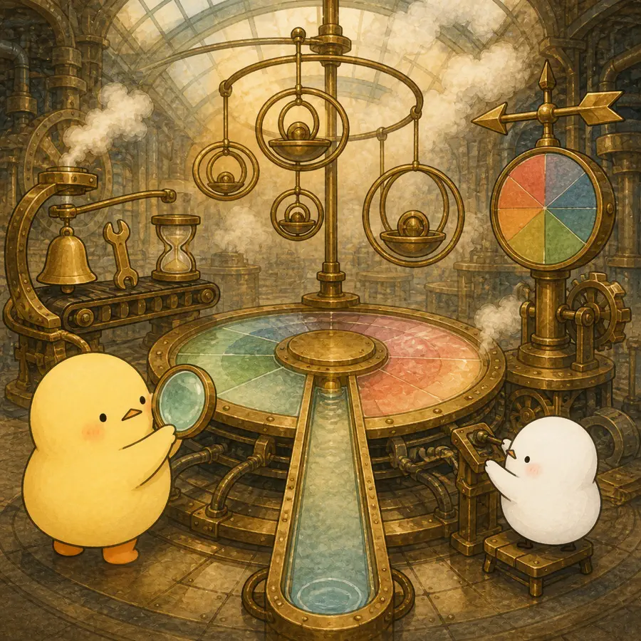

ILLUSTRATED OVERVIEW
4컷으로 읽는 나이와 노화의 여러 시간
편리한 숫자인 나이가 언제 빈 대리변수이고, 언제 사회를 움직이는 실제 규칙이 되는지 살펴봅니다.
옆으로 넘겨 4컷 보기
-
연대기적 나이는 자주 측정하지 않은 과정의 대리변수일 뿐이다.
-

사람은 달력 시간뿐 아니라 상대적·주관적·가족·조직·역사적 시간 속에서 늙는다.
-
사회는 나이로 역할·기회·권리와 의무를 실제로 배분한다.
-
좋은 노화 이론은 나이가 중요한 조건과 구체적 기제를 함께 밝힌다.